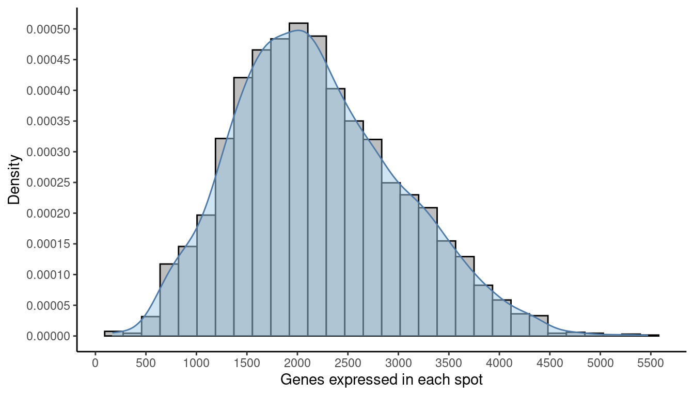
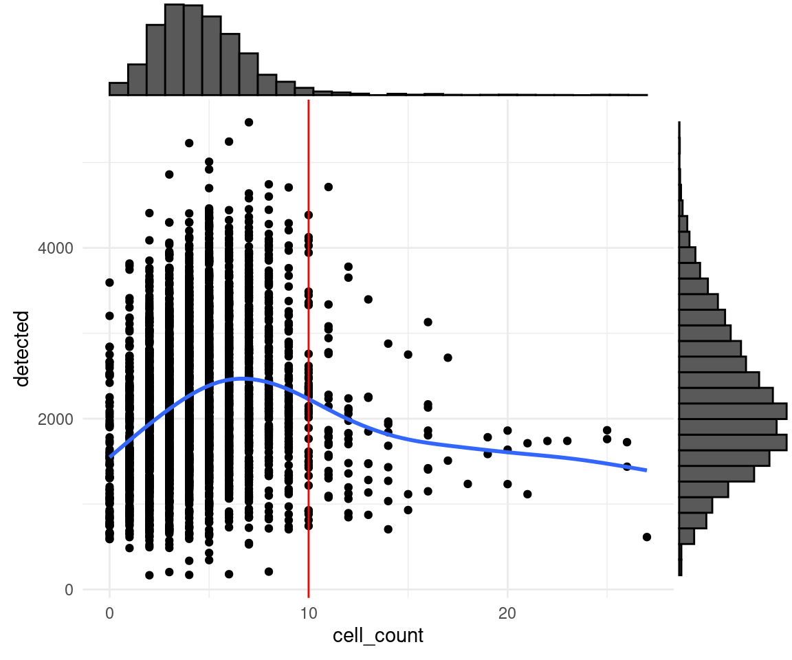
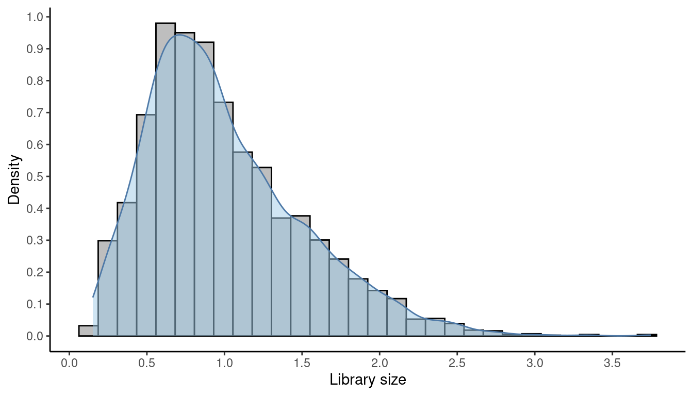

Chapter 2 Practical session 2
Having previously introduced some of the Bioconductor ecosystem for storing and manipulating STx data, in this second session we will focus on some of the most common STx analysis tasks - particularly quality control assessment and associated spot- and gene- level filtering. We will also consider some global methods of STx analysis, including dimensionality reduction and clustering. All of the methods demonstrated here continue to focus on interoperable packages available via Bioconductor.
## Load packages {-}
library(SpatialExperiment)
library(STexampleData)
library(ggspavis)
library(ggplot2)
library(scater)
library(scran)
library(igraph)
library(pheatmap)
library(ggExtra)ggspavisis a Bioconductor package that includes visualization functions for spatially resolved transcriptomics datasets stored inSpatialExperimentformat from spot-based (e.g., 10x Genomics Visium) platforms (Weber and Crowell (2022)).scateris also a Bioconductor package that is a selection of tools for doing various analyses of scRNA-seq gene expression data, with a focus on quality control and visualization which has extended applications to STx data too. It is based on theSingleCellExperimentandSpatialExperimentclasses and thus is interoperable with many other Bioconductor packages such asscran,scuttleandiSEE.
## Reload the example dataset
spe <- Visium_humanDLPFC()## see ?STexampleData and browseVignettes('STexampleData') for documentation## loading from cache2.1 Spot-level Quality Control
Considered quality control (QC) procedures are essential for analysing any high-throughput data in molecular biology. The removal of noise and low quality data from complex datasets can improve the reliability of downsrtream analyses. STx is no different in this regard, and QC can be undertaken in 2 main places - spot-level and gene-level. Here, we focus on spot-level QC.
Spot-level quality control (sQC) procedures are employed to eliminate low-quality spots before conducting further analyses. Low-quality spots may result from issues during library preparation or other experimental procedures, such as a high percentage of dead cells due to cell damage during library preparation, or low mRNA capture efficiency caused by ineffective reverse transcription or PCR amplification. Keeping these spots usually leads to creating problems during downstream analyses.
We can identify low-quality spots using several characteristics that are also used in cell-level QC for scRNA-sq data, including:
- library size (total of UMI counts per spot will vary due to sequencing -like different samples in a bulk RNA-seq-, or due to number of cells in the spot)
- number of expressed genes (i.e. number of genes with non-zero UMI counts per spot)
- proportion of reads mapping to mitochondrial genes (a high proportion indicates putative cell damage)
Low library size or low number of expressed features can indicate poor mRNA capture rates, e.g. due to cell damage and missing mRNAs, or low reaction efficiency. A high proportion of mitochondrial reads indicates cell damage, e.g. partial cell lysis leading to leakage and missing cytoplasmic mRNAs, with the resulting reads therefore concentrated on the remaining mitochondrial mRNAs that are relatively protected inside the mitochondrial membrane. Unusually high numbers of cells per spot can indicate problems during cell segmentation.
The idea of using scRNA-seq QC metrics in STx data comes from the fact that if we remove space and effectively treat each spot as a single cell, the two datasets share common features. We need to bear in mind, however, that the expected distributions for high-quality spots are different (compared to high-quality cells in scRNA-seq), since spots may contain zero, one, or multiple cells.
A few publications for further reading that can help you understand the quality controls: McCarthy et al. (2017) and Amezquita et al. (2020).
2.1.1 Plot tissue map
The dorso-lateral prefrontal cortex (DLPFC) is a functional brain region in primates involved in executive function. It consists of six layers of neurons that differ in their cell types, density and connections. The DLPFC dataset we looked at in session one, and will be here using comes with manual annotation of these layers (and the adjacent white matter - WM) by the authors Maynard et al. (2021). We can plot the tissue map with and without the annotations to get a complete view.
## Plot spatial coordinates without annotations
plotSpots(spe)
## Plot spatial coordinates with annotations
plotSpots(spe,
annotate = "ground_truth")

2.1.2 Calculating QC metrics
We will calculate the three main QC metrics described above using methods from the scater (McCarthy et al. 2017) package, and investigate their influence on the DLPFC dataset with some plots from ggspavis, along with some additional plots of our own.
At present, the dataset contains both on- and off-tissue spots - we plotted these in the previous practical. For any future analysis though we are only interested in the on-tissue spots. Therefore, before we run any calculations we want to remove the off-tissue spots.
NOTE: the on- or off-tissue information for each spot can be found in the colData of the spe object and in the in_tissue column where 0 = off-tissue and 1 = on-tissue.
## Dataset dimensions before the filtering
dim(spe)## [1] 33538 4992## Subset to keep only on-tissue spots
spe <- spe[, colData(spe)$in_tissue == 1]
dim(spe)## [1] 33538 3639The next thing we need to do before we make decisions on how to quality “trim” the dataset is to calculate the percentage per spot of mitochodrial gene expression and store this information inside the colData. First of all, find the mitochrondrial genes - their gene names start with “MT-” or “mt-”.
## Classify genes as "mitochondrial" (is_mito == TRUE)
## or not (is_mito == FALSE)
is_mito <- grepl("(^MT-)|(^mt-)", rowData(spe)$gene_name)
rowData(spe)$gene_name[is_mito]## [1] "MT-ND1" "MT-ND2" "MT-CO1" "MT-CO2" "MT-ATP8" "MT-ATP6" "MT-CO3"
## [8] "MT-ND3" "MT-ND4L" "MT-ND4" "MT-ND5" "MT-ND6" "MT-CYB"Then find what proportion of reads in a spot’s library are attributable to the expression of these genes. This uses a function, addPerCellQC() from scater (which in this instance is actually a wrapper around scuttle).
## Calculate per-spot QC metrics and store in colData
spe <- addPerCellQC(spe, subsets = list(mito = is_mito))
head(colData(spe))## DataFrame with 6 rows and 13 columns
## barcode_id sample_id in_tissue array_row
## <character> <character> <integer> <integer>
## AAACAAGTATCTCCCA-1 AAACAAGTATCTCCCA-1 sample_151673 1 50
## AAACAATCTACTAGCA-1 AAACAATCTACTAGCA-1 sample_151673 1 3
## AAACACCAATAACTGC-1 AAACACCAATAACTGC-1 sample_151673 1 59
## AAACAGAGCGACTCCT-1 AAACAGAGCGACTCCT-1 sample_151673 1 14
## AAACAGCTTTCAGAAG-1 AAACAGCTTTCAGAAG-1 sample_151673 1 43
## AAACAGGGTCTATATT-1 AAACAGGGTCTATATT-1 sample_151673 1 47
## array_col ground_truth cell_count sum detected
## <integer> <character> <integer> <numeric> <numeric>
## AAACAAGTATCTCCCA-1 102 Layer3 6 8458 3586
## AAACAATCTACTAGCA-1 43 Layer1 16 1667 1150
## AAACACCAATAACTGC-1 19 WM 5 3769 1960
## AAACAGAGCGACTCCT-1 94 Layer3 2 5433 2424
## AAACAGCTTTCAGAAG-1 9 Layer5 4 4278 2264
## AAACAGGGTCTATATT-1 13 Layer6 6 4004 2178
## subsets_mito_sum subsets_mito_detected subsets_mito_percent
## <numeric> <numeric> <numeric>
## AAACAAGTATCTCCCA-1 1407 13 16.6351
## AAACAATCTACTAGCA-1 204 11 12.2376
## AAACACCAATAACTGC-1 430 13 11.4089
## AAACAGAGCGACTCCT-1 1316 13 24.2223
## AAACAGCTTTCAGAAG-1 651 12 15.2174
## AAACAGGGTCTATATT-1 621 13 15.5095
## total
## <numeric>
## AAACAAGTATCTCCCA-1 8458
## AAACAATCTACTAGCA-1 1667
## AAACACCAATAACTGC-1 3769
## AAACAGAGCGACTCCT-1 5433
## AAACAGCTTTCAGAAG-1 4278
## AAACAGGGTCTATATT-1 4004After calculating a required metric, we need to apply a cut-off threshold for the metric to decide whether or not to keep each spot. It is important to consider an individual dataset on its own merits, as it might need slightly different cut-off values to be applied. As a result we cannot rely on identifying a single value to use every time and we need to rely on plotting these metrics and making a decision on a dataset-by-dataset basis.
2.1.3 Library size threshold plot
We can plot a histogram of the library sizes across spots. The library size is the number of UMI counts in each spot. We can find this information in the sum column in the colData.
## Density and histogram of library sizes
ggplot(data = as.data.frame(colData(spe)),
aes(x = sum)) +
geom_histogram(aes(y = after_stat(density)),
colour = "black",
fill = "grey") +
geom_density(alpha = 0.5,
adjust = 1.0,
fill = "#A0CBE8",
colour = "#4E79A7") +
scale_x_continuous(breaks = scales::pretty_breaks(n = 10)) +
scale_y_continuous(breaks = scales::pretty_breaks(n = 10)) +
xlab("Library size") +
ylab("Density") +
theme_classic()
As we can see there are no obvious issues with the library sizes. An example of an issue could be a high frequency of small libraries which would indicate poor experimental output. Generally we do not want to keep spots with too small libraries.
If the dataset we are analysing contains the number of cells that are present in each spot (this one does), then it makes sense to also plot the library sizes against the number of cells per spot. In that way we are making sure that we don’t remove any spots that may have biological meaning. In many cases though the datasets do not have such information unless we can generate it using a nuclei segmentation tool to extract this information from the H&E images.
The horizontal red line (argument threshold in the plotQC function) shows a first guess at a possible filtering threshold for library size based on the above histogram.
## Scatter plot, library size against number of cells per spot
plotQC(spe, type = "scatter",
metric_x = "cell_count", metric_y = "sum",
threshold_y = 700)
NOTE: The ggspavis plots for QC are convenient, but not very configurable. As can be seen from the “missing” bin in the top histogram here, the default configuration provided is not always the best. A ggplot2 alternative (using ggExtra to provide the marginal histograms) is also provided here.
p = ggplot(as.data.frame(colData(spe)), aes(x=cell_count, y=sum)) +
geom_point(size=0.5) +
geom_smooth(se=FALSE) +
geom_hline(yintercept = 700, colour='red') +
theme_minimal()
ggMarginal(p, type='histogram', margins = 'both')
We need to keep in mind here that the threshold is, to an extent, arbitrary. It is therefore important to look at the number of spots that are left out of the dataset by this choice of cut-off value, and also have a look at their putative spatial patterns. If we filtered out spots with biological relevance, then we should observe some patterns on the tissue map that correlate with some of the known biological structures of the tissue. If we do observe such a phenomenon, we have probably set our threshold too high (i.e. not permissive enough).
## Select library size threshold
qc_lib_size <- colData(spe)$sum < 700
## Check how many spots are filtered out
table(qc_lib_size)## qc_lib_size
## FALSE TRUE
## 3628 11## Add threshold in colData
colData(spe)$qc_lib_size <- qc_lib_size
## Check putative spatial patterns of removed spots
plotQC(spe, type = "spots",
discard = "qc_lib_size")
As an optional exercise, try to illustrate what happens if we set the threshold too high (i.e., 2000 UMI counts).
NOTE: For reference, remember the ground truth layers in this dataset that we plotted at the beginning of this session.
## Select library size threshold
code...
## Check how many spots are filtered out
code...
## Add threshold in colData
code...
## Check putative spatial patterns of removed spots
plotQC(...)2.1.4 Number of expressed genes
As we did with the library sizes, we can plot a histogram of the number of expressed genes across spots. A gene is “expressed” in a spot if it has at least one count in it. We can find this information in the detected column in the colData.
We will follow the same logic for the plots as we did for the library size earlier.
## Density and histogram of expressed genes
ggplot(data = as.data.frame(colData(spe)),
aes(x = detected)) +
geom_histogram(aes(y = after_stat(density)),
colour = "black",
fill = "grey") +
geom_density(alpha = 0.5,
adjust = 1.0,
fill = "#A0CBE8",
colour = "#4E79A7") +
scale_x_continuous(breaks = scales::pretty_breaks(n = 10)) +
scale_y_continuous(breaks = scales::pretty_breaks(n = 10)) +
xlab("Genes expressed in each spot") +
ylab("Density") +
theme_classic()
# plot number of expressed genes vs. number of cells per spot
p = ggplot(as.data.frame(colData(spe)), aes(x=cell_count, y=detected)) +
geom_point(size=0.5) +
geom_smooth(se=FALSE) +
geom_hline(yintercept = 500, colour='red') +
theme_minimal()
ggMarginal(p, type='histogram', margins = 'both')
Finally, again as before, we apply the chosen threshold to flag spots with (in this case) fewer than 500 expressed genes.
## Select expressed genes threshold
qc_detected <- colData(spe)$detected < 500
## Check how many spots are filtered out
table(qc_detected)## qc_detected
## FALSE TRUE
## 3628 11## Add threshold in colData
colData(spe)$qc_detected <- qc_detected
## Check for putative spatial pattern of removed spots
plotQC(spe, type = "spots",
discard = "qc_detected")
Again, an optional exercise is provided to see the effects of an over-enthusiastic filter - to illustrate what happens if we set the threshold too high (i.e., 1000 expressed genes).
NOTE: For reference, remember the ground truth layers in this dataset that we plotted at the beginning of this session.
## Select library size threshold
code...
## Check how many spots are filtered out
code...
## Add threshold in colData
code...
## Check putative spatial patterns of removed spots
plotQC(...)2.1.5 Percentage of mitochondrial expression
As we briefly touched on at the beginning, a high proportion of mitochondrial reads indicates low cell quality, probably due to cell damage.
We calculated this data earlier on in this session, and can now investigate the percentage of mitochondrial expression across spots by looking at the column subsets_mito_percent in the colData.
## Density and histogram of percentage of mitochondrial expression
ggplot(data = as.data.frame(colData(spe)),
aes(x = subsets_mito_percent)) +
geom_histogram(aes(y = after_stat(density)),
colour = "black",
fill = "grey") +
geom_density(alpha = 0.5,
adjust = 1.0,
fill = "#A0CBE8",
colour = "#4E79A7") +
scale_x_continuous(breaks = scales::pretty_breaks(n = 10)) +
scale_y_continuous(breaks = scales::pretty_breaks(n = 10)) +
xlab("Percentage of mitochondrial expression") +
ylab("Density") +
theme_classic()
In this instance, a higher percentage of mitochondrial expression is the thing to avoid, so the threshold is an upper bound, rather than the lower bounds we have observed so far. Our suggestion this time is to cut-off at 28%.
# plot mitochondrial read proportion vs. number of cells per spot
p = ggplot(as.data.frame(colData(spe)), aes(x=cell_count, y=subsets_mito_percent)) +
geom_point(size=0.5) +
geom_smooth(se=FALSE) +
geom_hline(yintercept = 28, colour='red') +
theme_minimal()
ggMarginal(p, type='histogram')
## Select expressed genes threshold
qc_mito <- colData(spe)$subsets_mito_percent > 28
## Check how many spots are filtered out
table(qc_mito)## qc_mito
## FALSE TRUE
## 3622 17## Add threshold in colData
colData(spe)$qc_mito <- qc_mito
## Check for putative spatial pattern of removed spots
plotQC(spe, type = "spots",
discard = "qc_mito")Again, try to illustrate what happens if we set the threshold too low (i.e., 20 0r 25%).
NOTE: For reference, remember the ground truth layers in this dataset that we plotted at the beginning of this session.
## Select library size threshold
code...
## Check how many spots are filtered out
code...
## Add threshold in colData
code...
## Check putative spatial patterns of removed spots
plotQC(...)2.1.6 Number of cells per spot
As previously mentioned, number of cells per spot is an attribute that not all datasets include. Nonetheless, it can be useful to further control the quality of the dataset prior to any downstream analysis. Of course, the number of cells per spot depends on the tissue type and organism and according to 10X Genomics, each spot typically contains between 0 and 10 cells.
The DPFLC dataset does contain information on the number of cells per spot (acquired by processing and cell segmentation of high-resolution histology images obtained prior on-slide cDNA synthesis, see Maynard et al. (2021) for details). To investigate the number of cells in each spot looking for any outlier values that could indicate problems we need to take a look in the column cell_count in colData.
## Density and histogram of the number of cells in each spot
ggplot(data = as.data.frame(colData(spe)),
aes(x = cell_count)) +
geom_histogram(aes(y = after_stat(density)),
binwidth = 1,
colour = "black",
fill = "grey") +
geom_density(alpha = 0.5,
adjust = 1.5,
fill = "#A0CBE8",
colour = "#4E79A7") +
scale_x_continuous(breaks = scales::pretty_breaks(n = 10)) +
scale_y_continuous(breaks = scales::pretty_breaks(n = 10)) +
xlab("Number of cells per spot") +
ylab("Density") +
theme_classic()
## Have a look at the values
table(colData(spe)$cell_count)##
## 0 1 2 3 4 5 6 7 8 9 10 11 12 13 14 15 16 17 18 19
## 84 211 483 623 617 541 421 287 140 92 50 25 18 10 9 3 8 2 1 2
## 20 21 22 23 25 26 27
## 3 2 1 1 2 2 1# plot number of expressed genes vs. number of cells per spot
p = ggplot(as.data.frame(colData(spe)), aes(x=cell_count, y=detected)) +
geom_point() +
geom_smooth(se=FALSE) +
geom_vline(xintercept = 10, colour='red') +
theme_minimal()
ggMarginal(p, type='histogram')
As we can see from both the histogram and the scatter plot there is a tail of very high values, which could indicate problems for these spots. More specifically, we can see from the scatter plot that most of the spots with very high cell counts also tend to have lower numbers of expressed genes. This indicates problems with the experiment on these spots, and they should be removed.
## Select expressed genes threshold
qc_cell_count <- colData(spe)$cell_count > 10
## Check how many spots are filtered out
table(qc_cell_count)## qc_cell_count
## FALSE TRUE
## 3549 90## Add threshold in colData
colData(spe)$qc_cell_count <- qc_cell_count
## Check for putative spatial pattern of removed spots
plotQC(spe, type = "spots",
discard = "qc_cell_count")
While there is a spatial pattern to the discarded spots, it does not appear to be correlated with the known biological features (cortical layers). The discarded spots are typically at the edges of the tissue. It seems plausible that something has gone wrong with the cell segmentation on the edges of the images, so it makes sense to remove these spots.
2.1.7 Remove low-quality spots
All the steps so far have flagged spots with potential issues - before proceeding with analysis, we want to remove these spots from our SpatialExperiment object. Since we have calculated different spot-level QC metrics and selected thresholds for each one, we can combine them to identify a set of low-quality spots, and remove them from our spe object in a single step.
We can also check once more that the combined set of discarded spots does not correspond to any obvious biologically relevant group of spots.
## Check the number of discarded spots for each metric
apply(cbind(qc_lib_size, qc_detected, qc_mito, qc_cell_count), 2, sum)## qc_lib_size qc_detected qc_mito qc_cell_count
## 11 11 17 90## Combine together the set of discarded spots
discard <- qc_lib_size | qc_detected | qc_mito | qc_cell_count
## Store the set in the object
colData(spe)$discard <- discard
## Check the spatial pattern of combined set of discarded spots
plotQC(spe, type = "spots",
discard = "discard")
Since this dataset has also manual annotation (remember)) we see that there are locations that are not annotated (marked with NA). We could further remove those locations to reduce potential noise and further increase the quality of the dataset.
## Select locations without annotation
qc_NA_spots <- is.na(colData(spe)$ground_truth)
## Combine together the set of discarded spots
discard <- qc_lib_size | qc_detected | qc_mito | qc_cell_count | qc_NA_spots
## Store the set in the object
colData(spe)$discard <- discard
## Check the spatial pattern of combined set of discarded spots
plotQC(spe, type = "spots",
discard = "discard")
## remove combined set of low-quality spots
spe <- spe[, !colData(spe)$discard]2.2 Normalisation of counts
2.2.1 Background
Normalisation is applied in STx data for the same reason as any other RNA-Seq technique - the differences observed in the count data can arise from a range of systematic factors, not just a physiologically-relevant change in expression. The primary systematic effect is that of library size (or in the case of STx, counts/UMIs per spot). scater corrects for library size by scaling the sizes across all spots such that the mean library size is 1. Normalized counts are then calculated as a ratio of observed count to library size factor.
Secondly, a log-transformation is applied to the scaled counts - this transformation is commonly applied as it stabilises the variance across the range of transcriptomics data (otherwise the variance is dominated by highly expressed genes) and it facilitates comparisons of expression by rendering positive and negative changes symmetrical and found by subtraction rather than division. Since \(log2(0)\) is undefined, a pseudocount is added to each observed count to avoid this error - a pseudocount of 1 is typically applied, as \(log2(0+1) = 0\).
Here we will be using methods from the scater (McCarthy et al. 2017) and scran (Lun, McCarthy, and Marioni 2016) packages that calculate logcounts using library size factors. The library size factors approach is arguably the simplest approach for STx data. Other approaches used in scRNA-seq are more difficult to justify their use in STx because of two main reasons:
- Spots can contain multiple cells of different cell-types.
- Datasets can include multiple tissue samples which will lead to different clusterings.
2.2.2 Log-tranformation of counts
## Calculate library size factors
spe <- computeLibraryFactors(spe)
## Have a look at the size factors
summary(sizeFactors(spe))## Min. 1st Qu. Median Mean 3rd Qu. Max.
## 0.1514 0.6326 0.9011 1.0000 1.2849 3.7500As described above, the mean size factor is 1.0.
## Density and histogram of library sizes
ggplot(data = data.frame(sFact = sizeFactors(spe)),
aes(x = sFact)) +
geom_histogram(aes(y = after_stat(density)),
colour = "black",
fill = "grey") +
geom_density(alpha = 0.5,
adjust = 1.0,
fill = "#A0CBE8",
colour = "#4E79A7") +
scale_x_continuous(breaks = scales::pretty_breaks(n = 10)) +
scale_y_continuous(breaks = scales::pretty_breaks(n = 10)) +
xlab("Library size") +
ylab("Density") +
theme_classic()
The log-transformation that takes place is a log2-transformation and in order to avoid - Infinity values we add a pseudo value of 1. Both the log2- transformation and the pseudocount of 1 are defaults in this method.
## Calculate logcounts and store in the spe object
spe <- logNormCounts(spe)
## Check that a new assay has been added
assayNames(spe)## [1] "counts" "logcounts"2.3 Selecting genes
2.3.1 Background
Gene selection - or alternatively “feature selection” - is applied to identify genes that are likely to be informative for downstream analyses. The most common feature selection method is the definition of highly variable genes (HVGs). The assumption is that since we quality-controlled and normalised our dataset, the genes with high variability are the ones that contain high levels of biological variability too. Since here we have a spatial dataset we can also try to identify spatially variable genes too (SVGs).
It is important to note that HVGs are identified solely from the gene expression data. Spatial information does not play a role in finding HVGs. STx data pose a dilemma; does the meaningful spatial information reflect only spatial distribution of major cell types or does it reflect additional important spatial features? If we believe the former, relying on HVGs can be enough. If the second also holds true though, it is important to identify SVGs as well.
2.3.2 Highly Variable Genes (HVGs)
Here we will be using methods from the scran package (Lun, McCarthy, and Marioni 2016) to identify a set of HVGs. Again, here we need to remember that scran methods were developed for scRNA-seq and we are performing the analysis under the assumption that the spots of an STx experiment can be treated as single cells.
In this dataset, the mitochondrial genes are too highly expressed and are not of major biological interest. As a result, if we are to identify true HVGs, we first need to remove the mitochondrial genes.
## Remove mitochondrial genes
spe <- spe[!is_mito, ]Then, we apply methods from scran that give a list of HVGs, which can be used for further downstream analyses.
First we model the variance of the log-expression profiles for each gene, decomposing it into technical and biological components based on a fitted mean-variance trend.
## Fit mean-variance relationship
dec <- modelGeneVar(spe)
## Visualize mean-variance relationship
fit <- metadata(dec)
fit_df <- data.frame(mean = fit$mean,
var = fit$var,
trend = fit$trend(fit$mean))
ggplot(data = fit_df,
aes(x = mean, y = var)) +
geom_point() +
geom_line(aes(y = trend), colour = "dodgerblue", linewidth = 1.5) +
labs(x = "mean of log-expression",
y = "variance of log-expression") +
theme_classic()The trend function that we used above is returned from the modelGeneVar function and returns the fitted value of the trend at any value of the mean. The “biological” variance of a gene is what remains when the fitted variance for a gene of that expression value is subtracted from the total variance (so genes above the blue trend line have a positive biological variance).
We select the top 10% of genes based on their biological variability The parameter prop defines how many HVGs we want. For example prop = 0.1 returns the top 10% of genes. prop = 1.0 would return all genes with a positive biological variability.
## Select top HVGs
top_hvgs <- getTopHVGs(dec, prop = 0.1)
## How many HVGs?
length(top_hvgs)## [1] 1429## Plot the HVGs on the mean:variance trend
fit_df <- fit_df %>%
tibble::rownames_to_column(var = "row.names") %>%
dplyr::mutate(topHVGs = ifelse(row.names %in% top_hvgs, TRUE, FALSE)) %>%
tibble::column_to_rownames("row.names")
ggplot(data = fit_df,
aes(x = mean, y = var, colour = topHVGs)) +
geom_point() +
geom_line(aes(y = trend), colour = "dodgerblue", linewidth = 1.5) +
scale_colour_manual(values = c("black", "red")) +
labs(x = "Mean of log-expression",
y = "Variance of log-expression",
colour = "Top HVGs") +
theme_classic()
NOTE - we will return to feature selection in the next practical, as it is a complicated process with significant impacts on the chosen downstream analysis.
2.3.3 Spatially variable genes (SVGs)
SVGs are genes with a highly spatially correlated pattern of expression, which varies along with the spatial distribution of a tissue structure of interest. This phenomenon is also called spatial autocorrelation and underlies all types of spatial data, as we will discuss later.
The field of geography has developed some statistical measures to calculate spatial autocorrelation. Examples of these are Moran’s I (“Notes on Continuous Stochastic Phenomena on JSTOR” 1950) and Geary’s C (“The Contiguity Ratio and Statistical Mapping on JSTOR” 1954) that can be used to rank genes by the observed spatial autocorrelation to identify SVGs.
Several sophisticated new statistical methods to identify SVGs in STx data have also recently been developed. These include SpatialDE (Svensson, Teichmann, and Stegle 2018), SPARK (Sun, Zhu, and Zhou 2020), and SPARK-X (Zhu, Sun, and Zhou 2021).
2.3.4 Integration of HVGs and SVGs
A recent benchmark paper (Li et al. 2022) showed that integrating HVGs and SVGs to generate a combined set of features can improve downstream clustering performance in STx data. This confirms that SVGs contain additional biologically relevant information that is not captured by HVGs in these datasets. For example, a simple way to combine these features is to concatenate columns of principal components (PCs) calculated on the set of HVGs and the set of SVGs (excluding overlapping HVGs), and then using the combined set of features for further downstream analyses (Li et al. 2022).
2.4 Dimensionality reduction
2.4.1 Background
STx data, just like bulk and single-cell transcriptomics, is captured in high-dimensional space. The reduction of this complexity can be helpful for a number of applications. Principal Components Analysis (PCA) assumes linearity in the data and has historically been used for dimensionality reduction. More modern techniques, such as Uniform Manifold Approximation and Projection (UMAP) (McInnes, Healy, and Melville 2018) and t-Stochastic Neighbor Embedding (tSNE) (Maaten and Hinton 2008) do not assume linearity and provide some performance advantages.
The main practical difference between the output of these techniques is that the distances between the data points in PCA space are interpretable and can be used for clustering, while the distances in a UMAP/tSNE embedding are not interpretable in this way. As a result, we will be using PCA to reduce the dimensions of our dataset to assist clustering and UMAP to further reduce the principal components (PCs) in a two-dimensional space and produce better visualisations for the PCA.
Dimensionality reduction prior to clustering has two main advantages, firstly it reduces dataset noise from random variation. Secondly it improves the computational efficiency of downstream analyses such as clustering. In an STx experiment, like the one we are analysing here, we have more than 3,000 spots and almost 1,500 HVGs. As as result, each spot has 1,500 attributes (dimensions) as a basis for subsequent clustering. This large number of variables that differentiate or cluster together spots gives rise to the curse of dimensionality (Keogh and Mueen 2017). This principle states that data points (spots) with a large number of features appear equidistant in attribute space resulting in poor clustering output.
2.4.2 PCA: Principal component analysis
Here we will use an efficient implementation of PCA provided in the scater package (McCarthy et al. 2017) and retain the top 50 PCs for further downstream analyses. The random seed is required for reproducibility reasons because this implementation uses randomisation.
## Set seed
set.seed(987)
## Compute PCA
spe <- runPCA(spe, subset_row = top_hvgs)
## Check correctness - names
reducedDimNames(spe)## [1] "PCA"## Check correctness - dimensions
dim(reducedDim(spe, "PCA"))## [1] 3511 502.4.3 UMAP: Uniform Manifold Approximation and Projection
Here we will also run UMAP - using scater’s implementation - on the 50 PCs generated above and retain the top 2 UMAP components to visualise results.
## Set seed
set.seed(987)
## Compute UMAP on top 50 PCs
spe <- runUMAP(spe, dimred = "PCA")
## Check correctness - names
reducedDimNames(spe)## [1] "PCA" "UMAP"## Check correctness - dimensions
dim(reducedDim(spe, "UMAP"))## [1] 3511 2## Update column names for easier plotting
colnames(reducedDim(spe, "UMAP")) <- paste0("UMAP", 1:2)2.4.4 UMAP visualisations
We can generate plots either using plotting functions from the ggspavis package or ggplot2 package. When clustering later, we will add cluster labels to these reduced dimension plots for an off-tissue visualisation.
## Plot top 2 PCA dimensions
# plotDimRed(spe, type = "PCA")
ggplot(data = as.data.frame(spe@int_colData@listData$reducedDims$PCA),
aes(x = PC1, y = PC2, colour = spe@colData$ground_truth)) +
geom_point(size = 0.5) +
scale_colour_brewer(type = "qual") +
labs(title = "Reduced dimensions: PCA",
x = "PC1",
y = "PC2",
colour = "Layers") +
theme_classic()
## Plot top 2 UMAP dimensions
# plotDimRed(spe, type = "UMAP")
ggplot(data = as.data.frame(spe@int_colData@listData$reducedDims$UMAP),
aes(x = UMAP1, y = UMAP2, colour = spe@colData$ground_truth)) +
geom_point(size = 0.5) +
scale_colour_brewer(type = "qual") +
labs(title = "Reduced dimensions: UMAP",
x = "UMAP1",
y = "UMAP2",
colour = "Layers") +
theme_classic()
2.5 Clustering
2.5.1 Background
The clustering of observations into statistically similar groups is a well-established application in both bulk and single-cell RNA-Seq analysis. Clustering is a helpful tool because it structures and orders the data, allowing useful insights to be gained from complex, multivariate datasets and use those insights to classify the observed data or to generate hypotheses.
Common clustering methods are applied to ST data based on correlation or statistical distance of gene expression measurements. As we briefly mentioned above, the dimensionality of STx data means that sample distances in gene expression space tend to be small and not reliable for identifying clusters, so feature selection (gene selection) or dimensionality reduction approaches (i.e., PCA, UMAP) tend to be taken before clustering.
Common approaches to clustering gene expression data include k-means, hierarchical and Louvain algorithms, and all have been applied to the clustering of ST data. Some of these methods are implemented in some of the most popular single-cell analysis packages, such as Seurat (Hao et al. 2021) and scran (Lun, McCarthy, and Marioni 2016) and have been used for clustering in a number of ST studies.
2.5.2 Clustering on HVGs
Here, we apply graph-based clustering to the top 50 PCs calculated on the set of selected HVGs, using the Walktrap method implemented in scran (Lun, McCarthy, and Marioni 2016). To do so, we assume that (i) each spot is equal to a cell and (ii) we can detect from the gene expression the biologically informative spatial distribution patterns of cell types.
## Set seed
set.seed(987)
## Set number of Nearest-Neighbours (NNs)
k <- 10
## Build the k-NN graph
g <- buildSNNGraph(spe, k = k, use.dimred = "PCA")
## Run walktrap clustering
g_walk <- igraph::cluster_walktrap(g)
## Get the cluster labels
clus <- g_walk$membership
## Check how many
table(clus)## clus
## 1 2 3 4 5 6
## 350 354 661 895 366 885## Store cluster labels in column 'label' in colData
colLabels(spe) <- factor(clus)2.5.3 HVGs clustering visualisations
We can visualise the clusters in two ways:
- plotting in spatial coordinates on the tissue map
- plotting in the UMAP/PCA embeddings.
We can use plotting functions either from the ggspavis package.
For reference, we will also display the ground truth (manually annotated) labels available for this dataset.
## Plot in tissue map
plotSpots(spe, annotate = "label",
palette = "libd_layer_colors")
## Plot ground truth in tissue map
plotSpots(spe, annotate = "ground_truth",
palette = "libd_layer_colors")## Plot clusters in PCA space
plotDimRed(spe, type = "PCA",
annotate = "label", palette = "libd_layer_colors")
## Plot clusters in UMAP space
plotDimRed(spe, type = "UMAP",
annotate = "label", palette = "libd_layer_colors")

From the visualizations, we can see that the clustering reproduces, to an extent, the known biological structure of the tissue, but not perfectly. One reason for this could be the fact that each spot may be comprised of a number different cells whose gene expression profiles are diluted in the overall profile of the spot, thus leading to low-quality clustering.
2.5.4 Spatially-aware clustering
In STx data, we can also perform clustering that takes spatial information into account, for example to identify spatially compact or spatially connected clusters.
A simple strategy is to perform graph-based clustering on a set of features (columns) that includes both molecular features (gene expression) and spatial features (x-y coordinates). In this case, a crucial tuning parameter is the relative amount of scaling between the two data modalities – if the scaling is chosen poorly, either the molecular or spatial features will dominate the clustering. Depending on data availability, further modalities could also be included. In this section, we will include some examples on this clustering approach.
2.6 Inter-cluster differentially expressed genes (DGEs)
2.6.1 Background
Here, we will identify differentially expressed genes between clusters.
We will use the findMarkers implementation from the scran (Lun, McCarthy, and Marioni 2016). This implementation uses a binomial test, which tests for genes that differ in the proportion expressed vs. not expressed between clusters. This is a more stringent test than the default t-tests, and tends to select genes that are easier to interpret and validate experimentally.
2.6.2 DGEs identification
## Set gene names as row names ease of plotting
rownames(spe) <- rowData(spe)$gene_name
## Test for DGEs
markers <- findMarkers(spe, test = "binom", direction = "up")
## Check output
markers## List of length 6
## names(6): 1 2 3 4 5 6The output from the findMarkers implementation is a list of length equal to the number of clusters. Each element of the list contains the Log-Fold-Change (LogFC) of each gene between one cluster and all others.
2.6.3 DGEs visualisation
Here we will plot LogFCs for cluster 1 against all other clusters
## Select cluster 1 genes
interesting <- markers[[1]]
## Get the top genes
best_set <- interesting[interesting$Top <= 5, ]
## Calculate the effect
logFCs <- getMarkerEffects(best_set)
## Plot a heat map
pheatmap(logFCs, breaks = seq(-5, 5, length.out = 101))Below we will plot the log-transformed normalised expression of the top genes for one cluster alongside their expression in the other clusters.
## Select genes
top_genes <- head(rownames(interesting))
## Plot expression
plotExpression(spe, x = "label", features = top_genes)
2.7 Putting it all together
# clear workspace from previous chapters
rm(list = ls(all = TRUE))
# LOAD DATA
library(SpatialExperiment)
library(STexampleData)
spe <- Visium_humanDLPFC()
# QUALITY CONTROL (QC)
library(scater)
# subset to keep only spots over tissue
spe <- spe[, colData(spe)$in_tissue == 1]
# identify mitochondrial genes
is_mito <- grepl("(^MT-)|(^mt-)", rowData(spe)$gene_name)
# calculate per-spot QC metrics
spe <- addPerCellQC(spe, subsets = list(mito = is_mito))
# select QC thresholds
qc_lib_size <- colData(spe)$sum < 600
qc_detected <- colData(spe)$detected < 400
qc_mito <- colData(spe)$subsets_mito_percent > 28
qc_cell_count <- colData(spe)$cell_count > 10
# combined set of discarded spots
discard <- qc_lib_size | qc_detected | qc_mito | qc_cell_count
colData(spe)$discard <- discard
# filter low-quality spots
spe <- spe[, !colData(spe)$discard]
# NORMALIZATION
library(scran)
# calculate logcounts using library size factors
spe <- logNormCounts(spe)
# FEATURE SELECTION
# remove mitochondrial genes
spe <- spe[!is_mito, ]
# fit mean-variance relationship
dec <- modelGeneVar(spe)
# select top HVGs
top_hvgs <- getTopHVGs(dec, prop = 0.1)
# DIMENSIONALITY REDUCTION
# compute PCA
set.seed(123)
spe <- runPCA(spe, subset_row = top_hvgs)
# compute UMAP on top 50 PCs
set.seed(123)
spe <- runUMAP(spe, dimred = "PCA")
# update column names
colnames(reducedDim(spe, "UMAP")) <- paste0("UMAP", 1:2)
# CLUSTERING
# graph-based clustering
set.seed(123)
k <- 10
g <- buildSNNGraph(spe, k = k, use.dimred = "PCA")
g_walk <- igraph::cluster_walktrap(g)
clus <- g_walk$membership
colLabels(spe) <- factor(clus)
# MARKER GENES
# test for marker genes
rownames(spe) <- rowData(spe)$gene_name
markers <- findMarkers(spe, test = "binom", direction = "up")